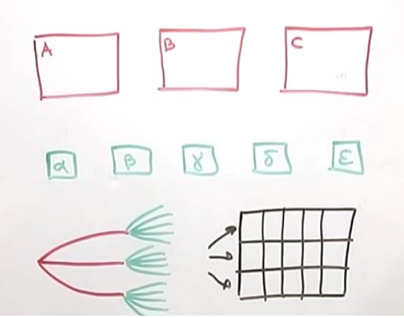

Главная
Математика
Комбинаторика
Комбинато́рика (комбинаторный анализ) — раздел математики, изучающий дискретные объекты, множества (сочетания, перестановки, размещения и перечисления элементов) и отношения на них (например, частичного порядка).
Комбинаторика связана с другими областями математики — алгеброй, геометрией, теорией вероятностей и применяется в различных областях знаний (например, в генетике, информатике, статистической физике).
Термин «комбинаторика» был введён в математический обиход Лейбницем, который в 1666 году опубликовал свой труд «Рассуждения о комбинаторном искусстве».
Иногда под комбинаторикой понимают более обширный раздел дискретной математики, включающий, в частности, теорию графов.
Примерт с конвертами и марками .
Всего возможных попыток 5*3=15 .
